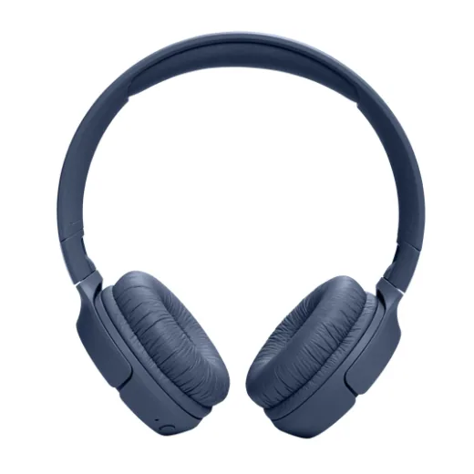
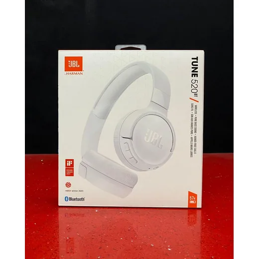
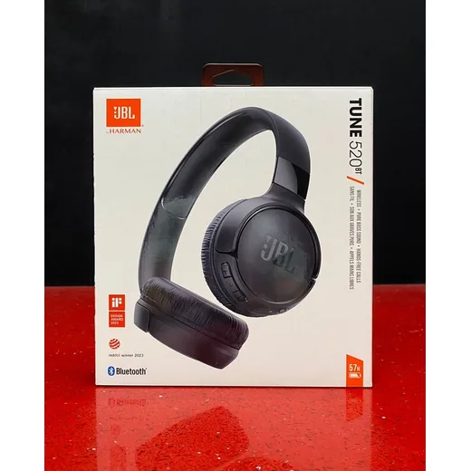
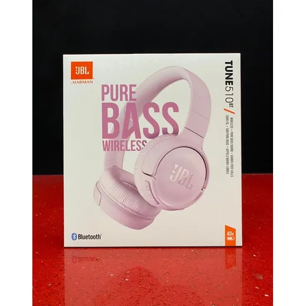
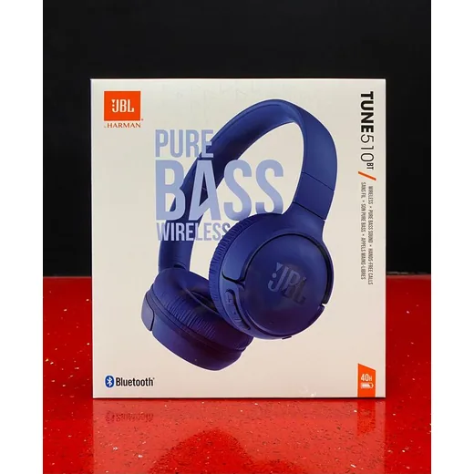
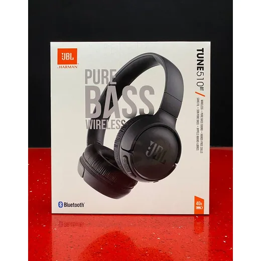
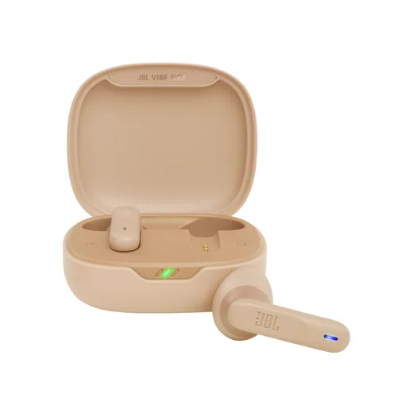
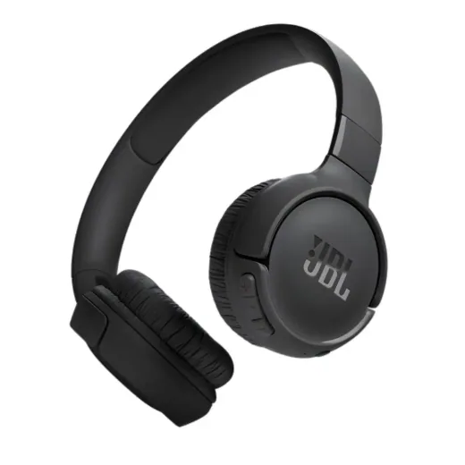
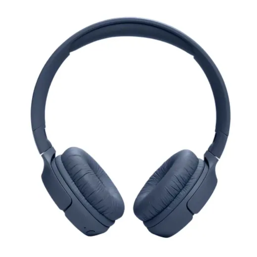

JBL · Modelo TUNE520
Audifono Diadema Wls Jbl Tune520
L 950
Más barato en Game Station · ahorras hasta L 995 frente a la tienda más cara
Precio en cada tienda
| Tienda | Precio | Antes | Disponibilidad | |
|---|---|---|---|---|
| Game Station | L 950 | — | Disponible | Ver en tienda › |
| Walmart | L 1,945 | — | Disponible | Ver en tienda › |
Precios referenciales tomados de cada tienda el 21 de noviembre de 2026. El precio válido es el que muestra la tienda al comprar.
Historial de precio
Lo seguimos desde el 1 de noviembre. Precio más bajo registrado: L 950 en Game Station (1 de noviembre), igual que hoy. El precio no ha cambiado en ese tiempo.
Características
| Duración de la batería | defaultValue |
|---|---|
| Es impermeable | defaultValue |
| Es resistente a la intemperie | defaultValue |
| Tamaño de la pantalla | defaultValue |
| Capacidad de la batería | 450 mAh |
| Color | Azul |
| Marca | JBL |
| Medida de altura | 18 cm aproximadamente |
| Medida de ancho | 16 cm aproximadamente |
| Medida de peso | 157 g aproximadamente |
| Modelo o serie del producto | Tune 520BT |
| País de Origen - Ensamblaje | China |
| Tipo de conector | USB-C |
Descripción
Los audífonos Bluetooth JBL Tune 520 en color azul son una opción práctica para escuchar música, podcasts, videos o llamadas con mayor libertad de movimiento. Su conexión inalámbrica facilita el uso diario sin depender de cables, ideal para estudiar, trabajar, viajar, entrenar o disfrutar entretenimiento en casa. El diseño tipo diadema aporta comodidad durante sesiones prolongadas, mientras que el color azul añade un estilo moderno y llamativo. Son fáciles de combinar con celulares, tablets o computadoras compatibles con Bluetooth, convirtiéndose en un accesorio útil para quienes buscan sonido personal, portabilidad y una experiencia más cómoda en sus actividades diarias.
Información del producto: La información de este producto es proporcionada por fabricantes y distribuidores. Te recomendamos verificar las especificaciones con el fabricante para obtener detalles más actualizados.
Otros audífonos JBL

Auricular Inalambrico Bluetooth Tune520 Blanco JBLL 950En Game Station
Auricular Inalambrico Bluetooth Tune520 NEGRO JBLL 950En Game Station
Auricular Inalambrico Bluetooth Tune 510BT Rosa JBLL 900En Game Station
Auricular Inalambrico Bluetooth Tune 510BT Azul JBLL 900En Game Station
Auricular Inalambrico Bluetooth Tune 510BT Negro JBLL 900En Game Station
Audifonos JBL Vibe-flex BeigeL 899En Diunsa
Audifonos Inalambricos JBL Tune 520BT Over Ear NegroL 897En La Curacao
Audífonos Inalámbricos JBL Tune 520BT Over Ear AzulL 897En La Curacao